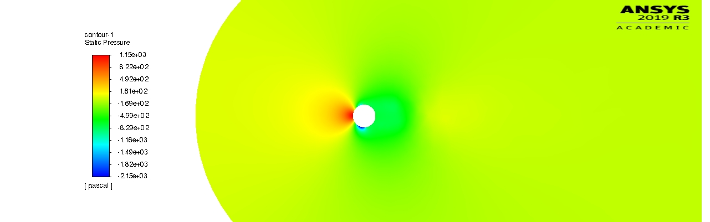
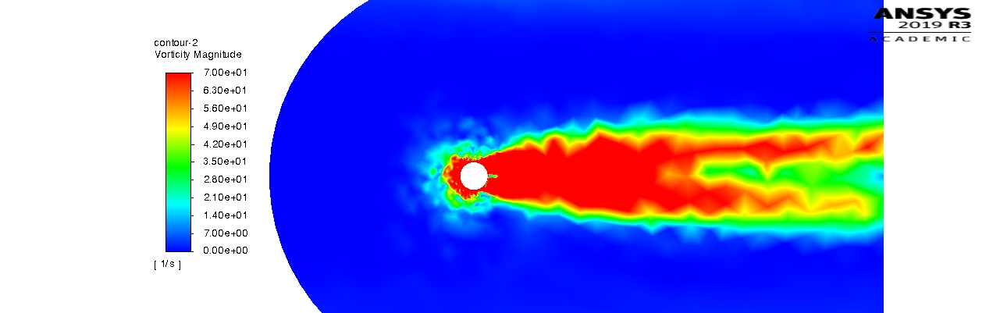

PROJECT
CFD Study of the Magnus Effect
ENSEIRB-MATMECA (Bordeaux INP) | ANSYS Fluent project | 2021
 alt="Velocity streamlines of a spinning tennis ball">
alt="Velocity streamlines of a spinning tennis ball">
Project Overview
2D CFD investigation of the Magnus effect on a spinning tennis ball, using ANSYS Fluent with a k-ω SST turbulence model. Swept ball translation speed and spin rate independently (from near-zero up to real-world tennis conditions, e.g. spin rates comparable to a top player's forehand) to isolate when the effect appears, and examined pressure, velocity, and vorticity fields to explain the resulting lift force.

